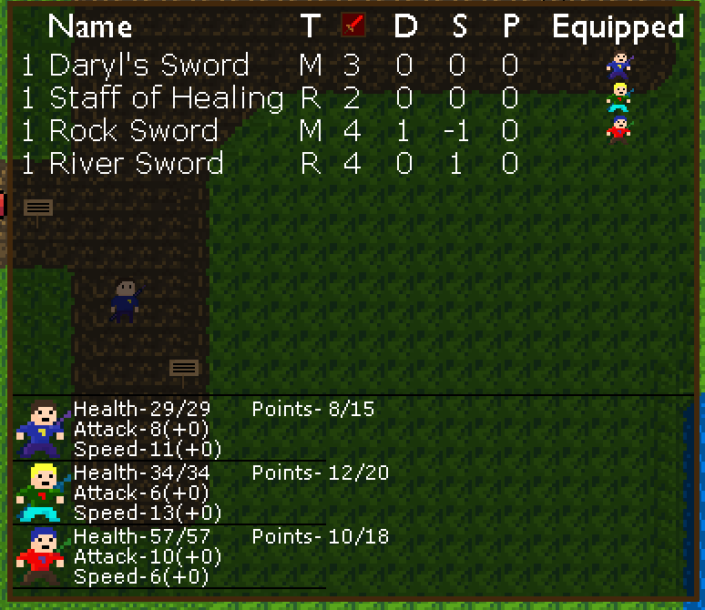
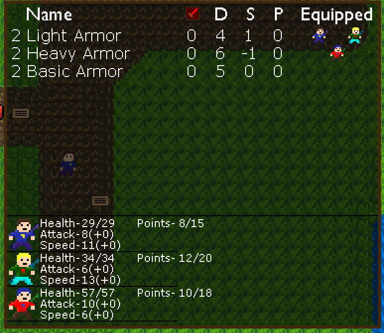
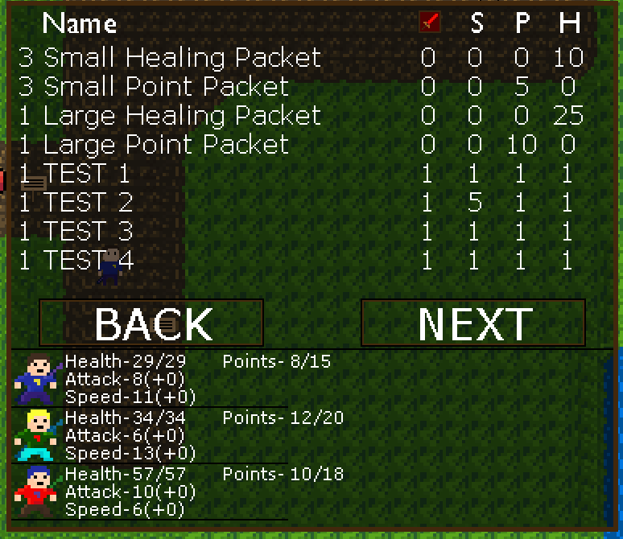
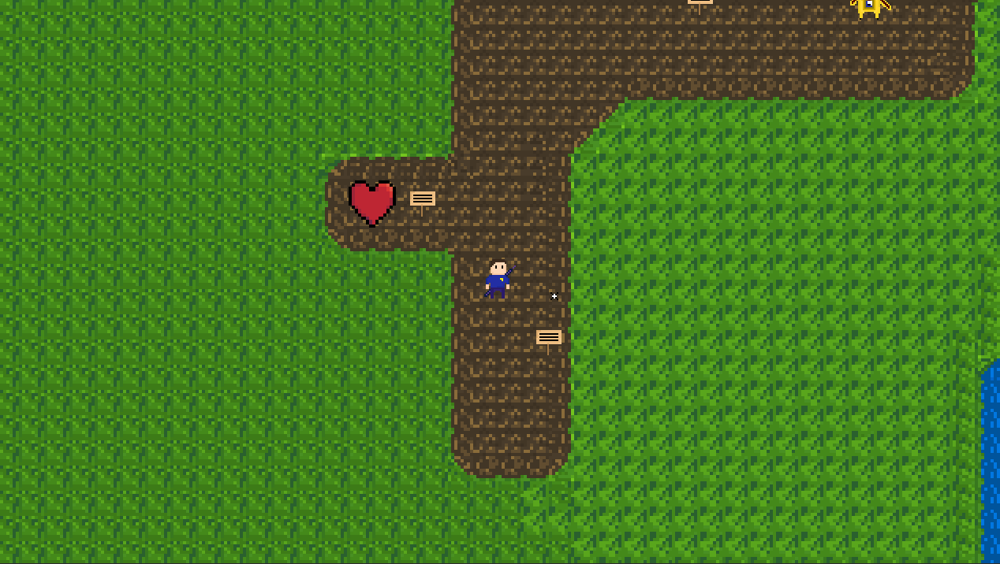
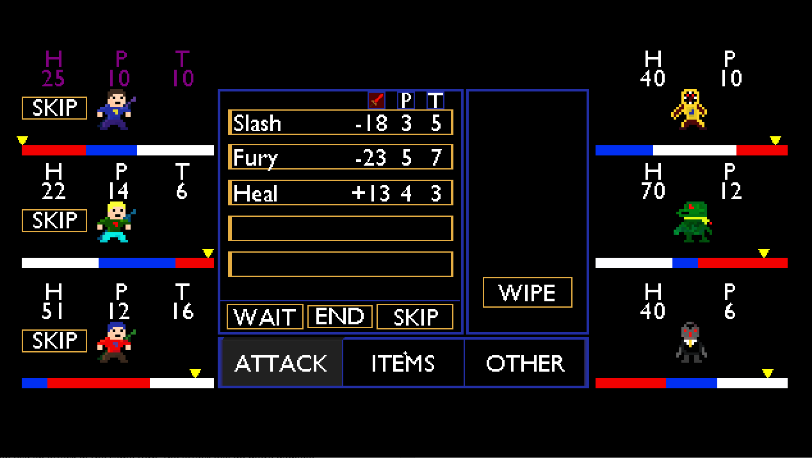

February 9, 2019.
I am happy to say that (for the most part) the inventory system is done for now! Update 7 was based all around the inventory system and while it worked well, I still needed some refining to do.
The biggest thing I wanted to do was add more stats to weapons, armor and consumables. For example, instead of weapons only changing your attack stat, it could also change you speed. I started working on this with the light and heavy armor items. The idea was that light armor would be weaker but make you slightly faster and heavy armor would make you slower but be stronger. I had to semi-redo some of the data structure systems for which the item stats are contained, but other than that it was a simple addition. Once I got that finished, I decided to add a basic armor set so you could have three armor options. I then needed to display these new stats in the menu. It took me a while to figure out how to organize it, but in the end I got there. Here is how the inventory looks now for each type of item and the current items in the game.



The next step was finishing up consumables. Consumables now have attack and speed stats connected to them, and I didn’t know what to do with that. I decided to have it act like a buff that you could use before or in a battle. It is like eating in Monster Hunter before a fight. I had to make buffs work in the both the inventory and the battle. The inventory was simple, and the buff appears next to the stat in parenthesis. Here it is in action.

Battles was a bit more complicated. First, I had to update the battle with the new stats, and then work on making the buffs work. Attack was simple, I just had to add to your attack stat whenever you used the item. I also had to make it work with the future mechanics; So if you use a attack buffing item then use an attack in the same turn, the attack will do more damage and you can see that within the menu before you finalize the attack.
Speed however is a completely different story. Speed when I first added it was the most stressful mechanic I have had to add up to this point in the game’s development. I had to completely redo the entire battle system to accommodate speed. It took a long time, but I got there in the end. However, the system wasn’t designed to have a fluctuating speed during the combat so programming these items could cause an issue. However, it worked well. While I did need to change quite a few things to get it to work properly, your speed changes perfectly and it is a lot of fun to use. Check it out when I give Daryl (top one) a boost of +100 speed during a battle…

I thought all was well and good until I discovered a bug. This bug involves the future arrow that shows up when you use an attack. The future arrow determines when you will attack the enemy and it is imperative that the future arrow is accurate. After I added the speed buff, I discovered that the calculation for the future arrow was wrong. This means that the entire battle system is wrong. There is a lot riding on me fixing this bug. If I cannot, I will have to recreate the battle system again for the third time which is something I will try to avoid with any means necessary.
This is where I am at now. I am trying to fix the future arrow once and for all. It is tough to figure out how to do this properly so everything works as it should. Hopefully I will have an update soon explaining what the issue is and how I fix it. But until then, I will be working away.
Thanks for reading,
Andy